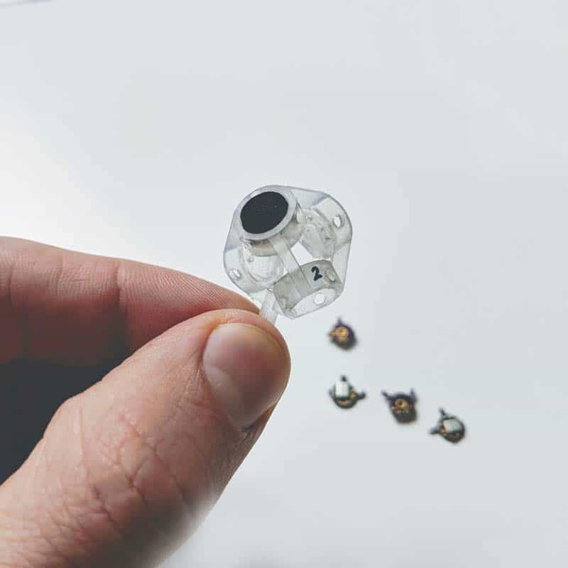
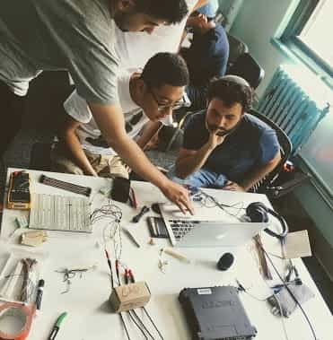
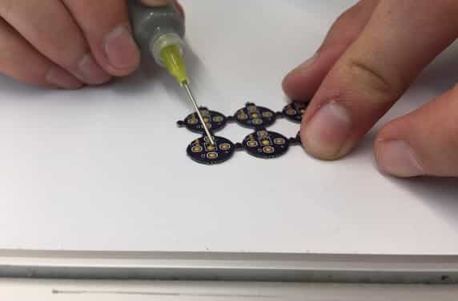
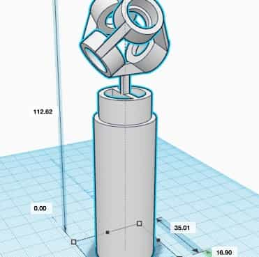
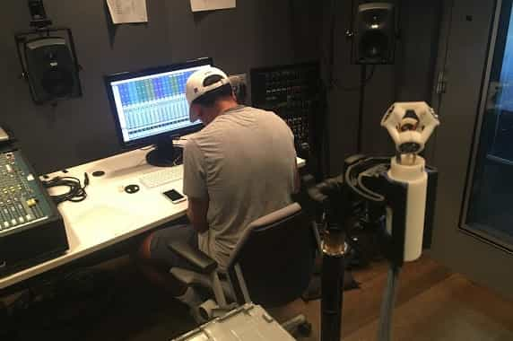
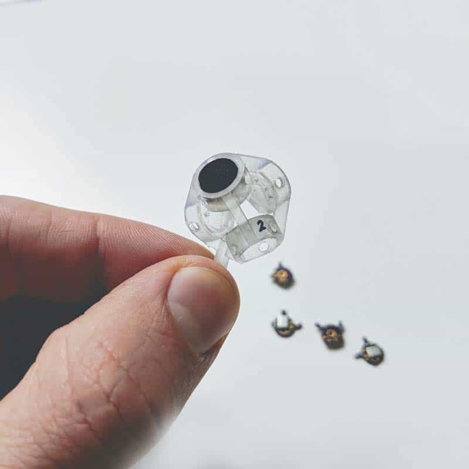
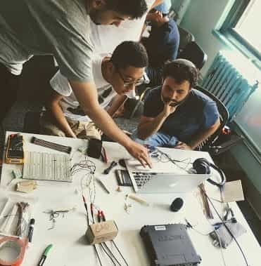
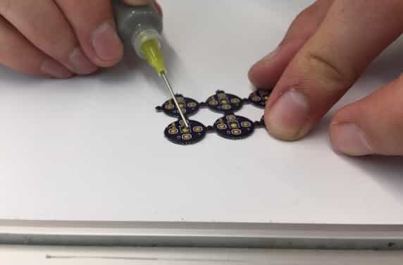
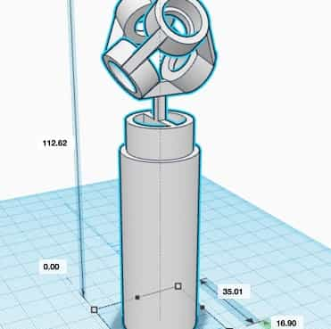
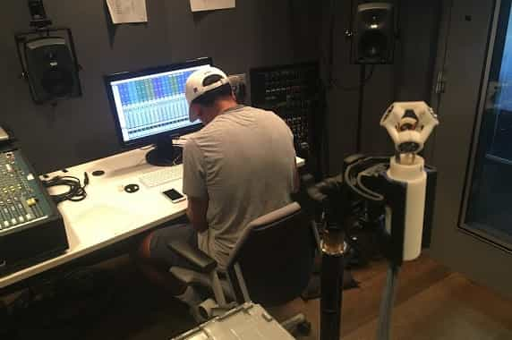

at NYU, I helped design, develop and prototype a low-cost ambisonic microphone using MEMS capsules (the silicon microphones found in smartphones). we were part of the NYU J-term sprint where we followed lean startup methodologies, and won a bronze medal in the Student Design Competition (SDC) at the Audio Engineering Society (AES) convention in 2017. see the full project website.
 








